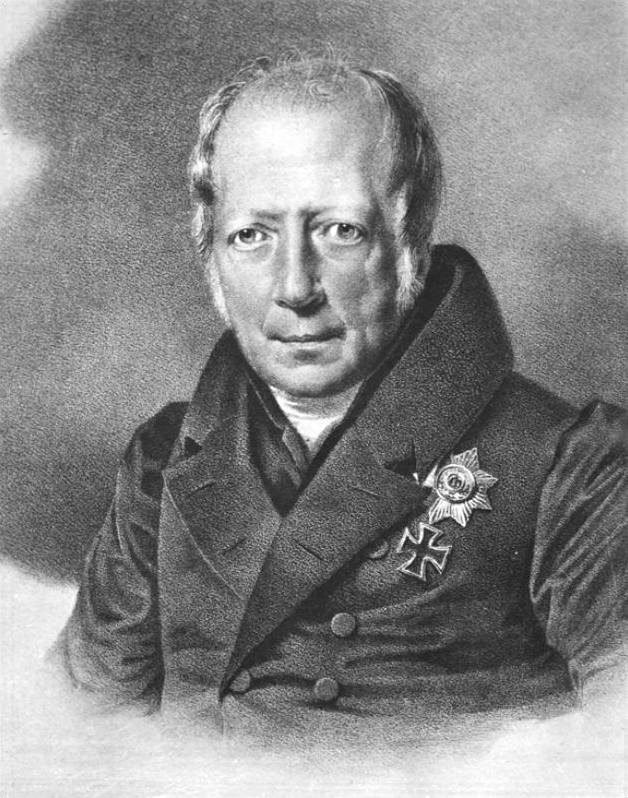

Wilhelm von Humboldt war eine der bedeutendsten Persönlichkeiten der deutschen Geistesgeschichte. Geboren am 22. Juni 1767 in Potsdam und gestorben am 8. April 1835 in Tegel, wirkte er als Philosoph, Sprachwissenschaftler, Diplomat und Bildungsreformer.
Humboldt ist vor allem für sein humanistisches Bildungsideal bekannt. Er vertrat die Auffassung, dass Bildung nicht nur der beruflichen Qualifikation dienen sollte, sondern der ganzheitlichen Entwicklung des Menschen. Ziel sei es, die individuellen Fähigkeiten frei zu entfalten und Persönlichkeit, Denken und Charakter zu bilden. Dieses Ideal prägte maßgeblich das moderne Bildungssystem, insbesondere das Konzept der Universität.
Ein Meilenstein seines Wirkens war die Gründung der Berliner Universität im Jahr 1810, die heute als Humboldt-Universität zu Berlin bekannt ist. Dort setzte er seine Vorstellungen von Einheit von Forschung und Lehre um: Wissenschaft sollte nicht nur Wissen vermitteln, sondern aktiv neues hervorbringen.
Neben seiner Bildungspolitik leistete Humboldt auch bedeutende Beiträge zur Sprachwissenschaft. Er erforschte zahlreiche Sprachen und entwickelte die Idee, dass Sprache das Denken eines Menschen prägt. Für ihn war jede Sprache ein Ausdruck einer eigenen Weltansicht.
Auch politisch war Humboldt aktiv. Als preußischer Diplomat nahm er unter anderem am Wiener Kongress teil und setzte sich für Reformen im Bildungswesen und in der Verwaltung ein.
Wilhelm von Humboldt hinterließ ein nachhaltiges Erbe: Seine Ideen beeinflussen bis heute Schulen, Universitäten und das Verständnis von Bildung als lebenslangen, selbstbestimmten Prozess.
| Bereich | Informationen |
|---|---|
| Vollständiger Name | Wilhelm von Humboldt |
| Geboren | 22. Juni 1767 in Potsdam |
| Gestorben | 8. April 1835 in Tegel |
| Berufe | |
| Bekannt für | Humanistisches Bildungsideal |